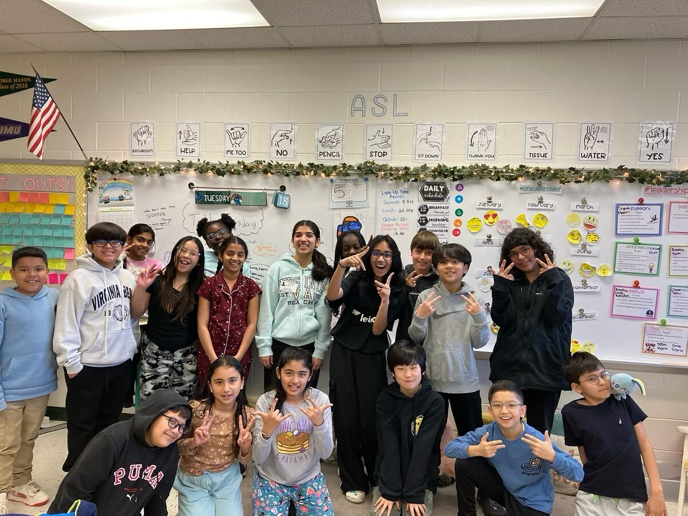
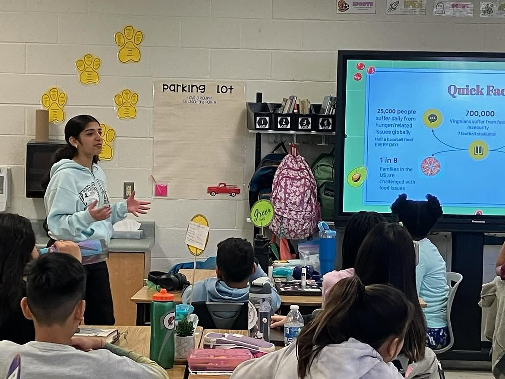
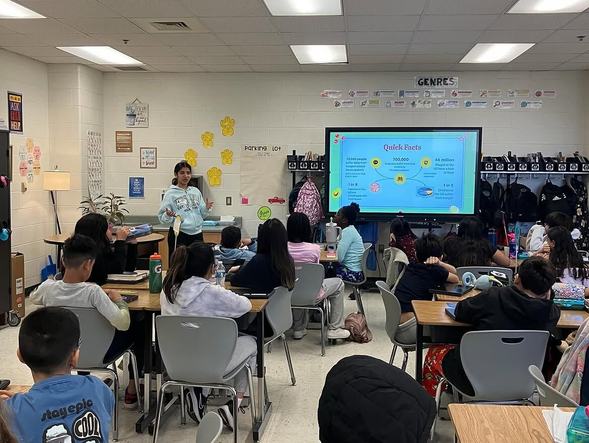
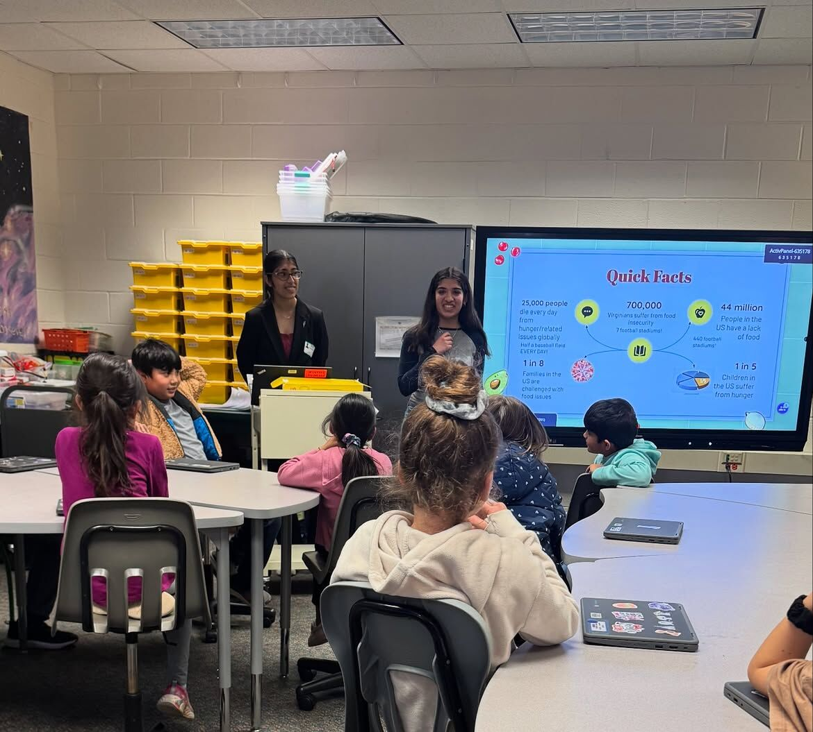

Donations
Recovering surplus cafeteria food and delivering it to Loudoun Hunger Relief.
Youth-led · Loudoun County, VA

Our mission
Second Harvest recovers surplus school cafeteria food for neighbors facing hunger, and teaches the next generation that no good meal should go to waste.
What is Second Harvest?
Every Friday, untouched and nutritious cafeteria meals were being thrown away at local high schools, while families in the same community went without. In 2023, three high school students set out to close that gap.
Today, student ambassadors across Loudoun County collect surplus cafeteria food for Loudoun Hunger Relief and visit elementary schools to teach younger students about food waste and food insecurity.

Recovering surplus cafeteria food and delivering it to Loudoun Hunger Relief.
Classroom lessons that teach elementary students about food waste and hunger.
Working with LCPS School Nutrition Services, schools and local food banks.
Sharing the story online and in the community so more people take action.
Impact so far
Get involved
Lead a chapter at your high school, or join as an LCPS ambassador and help with collections at a school that already has one. Pick a path:
For students who want to launch and lead Second Harvest at their high school.
Ready to lead?
The application takes about 10 minutes. We'll follow up by email with next steps.
Open chapter applicationWant the details first? Read how chapters work.
For Loudoun County Public Schools students who want to volunteer with a Second Harvest chapter.
Become an ambassador
Tell us your school and availability, and we'll connect you with your local chapter.
Open ambassador formQuestions? Contact our team.


Every chapter means more meals for Loudoun families and less good food in the trash.
About us
Three students, one cafeteria problem, and a plan to make sure good food reaches the people who need it.
How it started
Second Harvest was founded in 2023 by three students at the Academies of Loudoun, in the Academy of Engineering and Technology pathway. Looking for a project aligned with the United Nations Sustainable Development Goals, they chose Goal #2: Zero Hunger.
They noticed that every Friday, untouched and nutritious cafeteria meals were being thrown away, while families in the same community faced food insecurity. So they built a way to recover that food and get it to Loudoun Hunger Relief, the leading food bank in Northern Virginia.
Mission
Recover surplus school cafeteria food for neighbors facing hunger, and teach the next generation that no good meal should go to waste.
Vision
A Loudoun County where no edible school meal is thrown away and no family goes hungry.
Why we exist
These are the facts we share in elementary classrooms. Good food is thrown away every day while neighbors go without. Second Harvest connects the two.
Virginians face food insecurity
people in the U.S. lack enough food
U.S. families are challenged with food issues
U.S. children face hunger
How we operate
Student ambassadors run every step, with support from LCPS School Nutrition Services and school staff.
At each partner high school, ambassadors work with cafeteria staff to set aside untouched, unserved meals that would otherwise be thrown out.
Food is weighed, recorded and packed safely so every pound is counted.
Recovered food goes to Loudoun Hunger Relief, which gets it to families across the county.
Ambassadors visit elementary schools to teach younger students about food waste and food insecurity.
Food recovery from school cafeterias.
Lessons for elementary classrooms.
Schools, LCPS and local food banks.
Telling the story so others act.
Our impact
Every tray counts. Here's what student ambassadors have done since 2023.
Impact visuals
Food that would have been thrown away, delivered to Loudoun Hunger Relief instead.
Membership grew by more than 200% over the past year as new schools joined.
| Year | Membership (relative) |
|---|---|
| Last year | 1× |
| This year | 3× (+200%) |
Where we work
Student ambassadors run food recovery at these Loudoun County high schools.
In the classroom
Ambassadors teach about food waste and food insecurity at partner elementary schools.
Milestones
From one school's cafeteria to a county-wide student movement.
Swara Reddy, Anvi Borkar and Saanvi Celamkoti launch Second Harvest at the Academies of Loudoun, inspired by UN SDG #2: Zero Hunger. Teacher Mr. Alec Loyd helps start the first chapter at ACL.
Chapters spread to Lightridge, Briar Woods, Broad Run, John Champe, Freedom and Riverside, with support from LCPS Nutrition Manager Ms. Irene Stevens.
Second Harvest places in the top 10 at the StepUp Loudoun Youth Competition.
Our work is featured as a top story in the Loudoun Times-Mirror.
A second top-10 finish at StepUp Loudoun, membership up more than 200%, 800+ elementary students reached and 1,000+ Instagram followers.
Nearly 1,000 meals recovered for Loudoun Hunger Relief, and new chapters are always welcome.
Get involved
Turn your school's leftover lunches into meals for Loudoun families. We'll help you every step of the way.
Any Loudoun County high school student who cares about hunger and food waste and is ready to lead. You don't need experience, just commitment and a few friends who want to help.
Chapters recover surplus cafeteria food for Loudoun Hunger Relief, track every pound, visit elementary classrooms to teach about food waste, and spread the word at school and online.
Step by step
Most chapters go from application to their first collection in a few weeks.
Fill out the chapter application and tell us about your school and your team.
We'll set up a call to walk you through how Second Harvest works and answer your questions.
Find a faculty sponsor and connect with your school's administration and cafeteria manager.
Build a crew of student ambassadors to share collections, logging and outreach.
Start recovering food, log your pounds and celebrate your first delivery to Loudoun Hunger Relief.
Requirements
Application form
Ready to bring Second Harvest to your school? Start your application today.
Open chapter applicationAlready in a chapter? Use the LCPS ambassador form.
FAQ
Can't find what you need? Reach out and a member of our team will get back to you.
Testimonials
What partners, team members and sponsors say about working with Second Harvest.
We're collecting stories from our partners, including food banks, schools and LCPS staff. Yours could be here.
Ambassadors and chapter leaders: what has Second Harvest meant to you? Tell us about your team experience.
Our sponsors make this work possible. We'd love to share why you support student-led food recovery.
With gratitude
LCPS Nutrition Manager, a key supporter of cafeteria food recovery.
Started the first Second Harvest chapter at the Academies of Loudoun.
Our food bank partner, getting recovered food to families across the county.
News & media
Press coverage, recognition and the latest from our Instagram.
Recognized in both 2025 and 2026.
Join 1,000+ followers for collection updates, classroom visits and new chapter launches.
Contact
Questions, ideas or partnership opportunities? We'd love to hear from you.
Questions about Second Harvest, volunteering or our programs.
Send a messageSchools, food banks, businesses and sponsors: let's work together to fight hunger in Loudoun.
Propose a partnershipWant to bring Second Harvest to your high school? Start here.
Chapter info